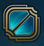
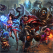

Rotas
O modo clássico 5v5 de League of Legends possui três rotas: Superior, Meio e Inferior, a area entre essas rotas é chamada de Selva e o objetivo é destruir o nexus do inimigo enquanto defende o seu.
Rotas >>Campeões
League of Legends tem um elenco de campeões sempre em expansão. Cada um deles tem um visual e um estilo de jogo únicos. Aqui, você pode dar uma olhada em alguns campeões disponíveis e saber mais sobre os personagens que lhe interessam.
Campeões >>Tutoriais
O Centro de Aprendizado é uma playlist no canal do youtube League of Legends BR e oferece dicas sobre tudo do jogo, ajudando tanto jogadores novatos quanto jogadores experientes.
Tutoriais >>